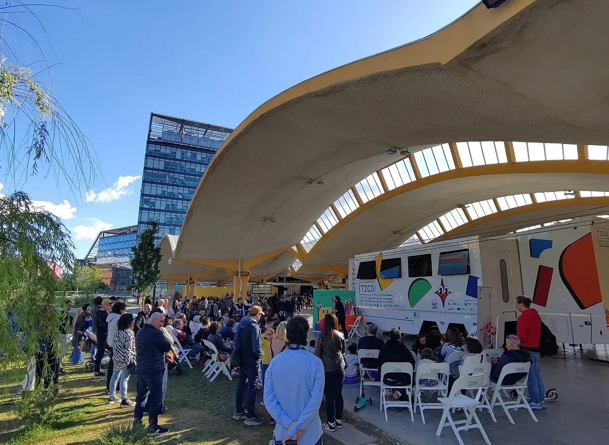
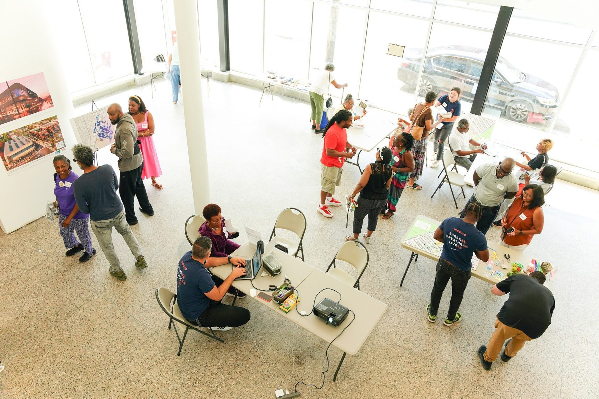
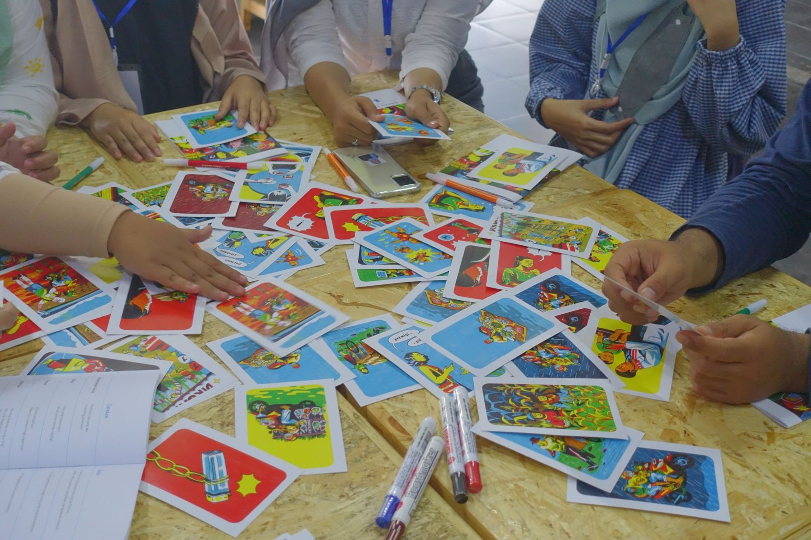
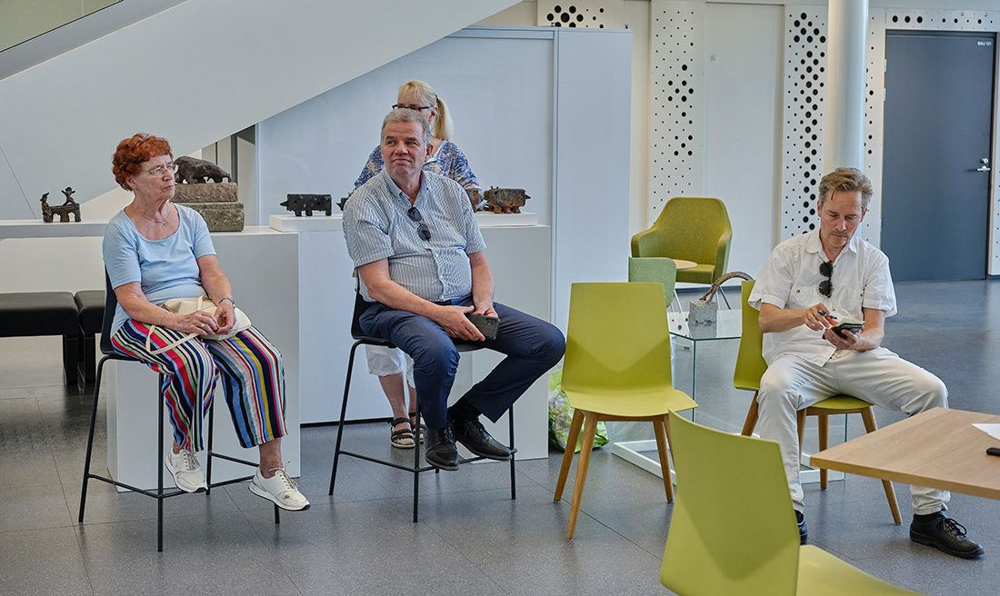
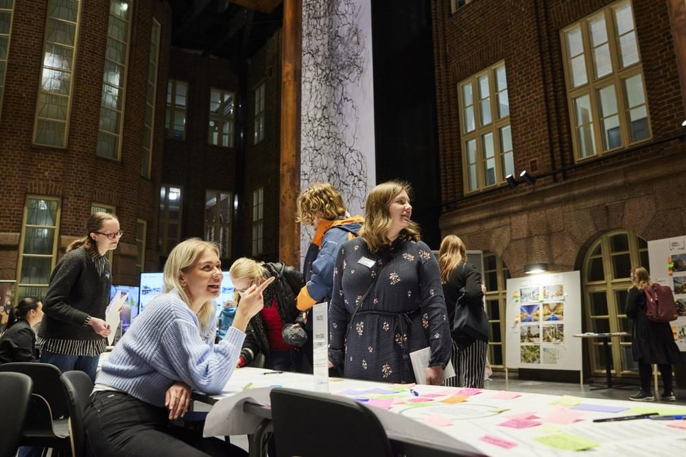
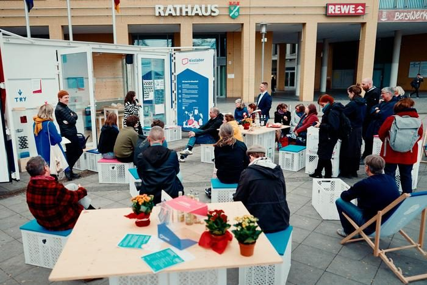
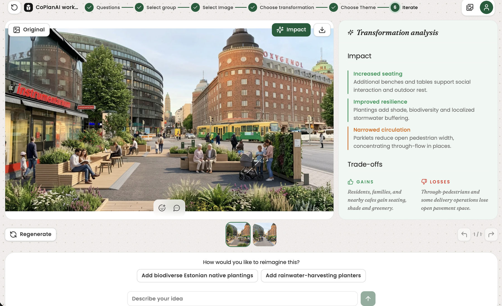

Damiano Cerrone
Co-founder · product design and innovation lead
Doctoral dissertation on collaborative planning with generative AI, 2026. Co-founder of SPIN Unit.
About CoPlanAI
CoPlanAI is a platform for collaborative planning. Residents work on a real place together with the institution that must decide, in the room and online. A resident’s words become an image of the place in seconds. The platform evaluates it against the institution’s own policy, and people weigh it before anything is decided.
We work with cities, public agencies and international organisations, and run educational programmes for schools, universities and professionals. Built and run in Helsinki by SPIN Unit Lab Oy since 2018.
107 engagements79 cities39 countriessince 2021
Workshops
In the room or online, what was agreed can be shown and challenged afterwards. Each photograph opens its project page.

Bologna · 2026TICO – Officina mobile della conoscenza Opens the project page in a new tab.

East Cleveland · 2023Connect East Cleveland Opens the project page in a new tab.

Nusantara, Indonesia · 2023Nusantara Capital City, with UNDP Opens the project page in a new tab.

Kaarina · 2024Kaarina Market Square, with Sweco Opens the project page in a new tab.

Lahti · 2023Lahti City Centre Vision 2040 Photo: Tommi Mattila Opens the project page in a new tab.

Berlin · 2025Kiezlabor, with CityLAB Berlin Opens the project page in a new tab.
Who we are
Two co-founders, and the company that builds and runs the platform.
Co-founder · product design and innovation lead
Doctoral dissertation on collaborative planning with generative AI, 2026. Co-founder of SPIN Unit.
Co-founder · research and policy lead
PhD and docent in urban studies. Professor of Practice, University of Vaasa, and senior researcher, University of Helsinki. Partner at SPIN Unit.
Author of ‘Participating with AI: how generative visualisations are changing participatory planning’.
The company
An urban-data and participatory-design studio.
CoPlanAI is a service of SPIN Unit Lab Oy, based in Helsinki since 2018. From 2021 until September 2025, SPIN Unit worked with Toretei on the field application of UrbanistAI, the platform Toretei develops, and some engagements in our record were delivered with it. Ideas and feedback from that fieldwork helped shape the platform’s usability and functionality. The collaboration ended in September 2025.
Who we work with
01
Bring residents in while the plan can still change, and leave with evidence a council can act on.
02
Our usual entry point: the team with the mandate to experiment before the line organisation commits.
03
With UNDP and GIZ, from Nusantara and Skopje to Panama City and Manila.
04
Educational programmes, research partnerships, and a kiosk mode that runs without a facilitator.
64 organisations: cities, ministries and agencies, international bodies, universities and companies.
Ethics and AI governance
AI in a planning institution changes how the institution decides. So we set out who does what, what we commit to, and how we handle the model’s bias.
01 · The platform
Generates and evaluates scenarios
From people’s own words, on the real place. Each scenario is evaluated against the institution’s own policy, design guides and law, and for its likely environmental and social impact.
02 · People
Deliberate
They compare, argue and vote. They see what each option would do, and can change their minds.
03 · The institution
Decides
It holds the mandate and sets the guardrails every option has to respect. What people agreed arrives documented, as evidence it can act on.
A decision-support tool: it informs decisions and takes none.
Human in the loop, by design
Every generative step is wrapped in a human step.
Participants control what the model produces, and see a scenario’s likely impact and trade-offs before anyone chooses.
We show where the model leans, and the room can correct it.
The platform can stand in for future residents and ecosystems, to stress-test a scenario. It never replaces the living public.

The participant app · IterateA scenario with its evaluation beside it: what it would improve, what it would narrow, who gains and who loses.
Bias, curated in the open
Every tuning over-represents some features and under-represents others. We treat bias curation as design work, done in the open, in four practices.
Every tuning ships with a note on what it favours and what it flattens.
Tuned with local imagery and policy, with the client.
Deliberate weight for children, elders and biodiversity, set as open policy choices.
Professionals review against regulation and quality before any decision.
Energy and footprint
Inference runs only while a workshop is live. The model generates in seconds, then stands down.
How the platform uses energy
Data and compliance
The platform runs on European cloud infrastructure, to the standards public institutions must meet.
The headline terms of our standard Service Level Agreement.
Contact
One address reaches the whole team. Support, data and compliance have their own.
The team
info@coplanai.comThe founders
damiano.cerrone@coplanai.com sampo.ruoppila@coplanai.comSupport, data and compliance
governance@coplanai.comBy email, 09:00–17:00 EET, Monday to Friday.
Visit
SPIN Unit Lab Oy60.1735° N · 24.9195° E
Open the map (opens in a new tab)